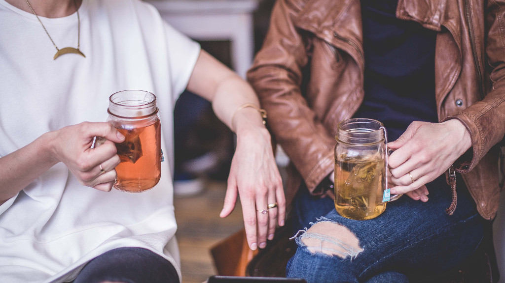

WHO (Světová zdravotnická organizace) na zprávách CNN a BBC řekla jasné ne k likvidaci
Koronaviru teplými nápoji. WHO se ale zaměřila jen na tvrzení zpráv ze sociálních sítí, že teplé
nápoje mohou zabít Koronaviry, což samozřejmě je možné jen na povrchu nosohltanu, ale ne
pod povrchem, kde je virů nejvíce. Ale vůbec nezohlednila, že pití teplých nápojů sníží
náchylnost nosohltanu k infekcím, které naopak pitím studených nápojů jsou podporovány. Je
to tím, že viry se nejvíce množí při normální teplotě těla. Proto tělo vyvolává při infekci
horečku, aby zvýšenou teplotou zpomalilo rozmnožování virů, ale tělo při začínající nákaze
v nosohltanu ještě neví, že se nakazilo a proto horečku nevyvolá. Proto mu musíme trochu
pomoci a nosohltan zahřívat častým pitím teplých nápojů a ne studených.
Nezvratným faktem je, že chřipková onemocnění se dostávají do těla nosohltanem, kde se
namnoží, a když se tělo s nimi v době, kdy jsou v nosohltanu, nevypořádá, což je zpravidla 1-2
týdny od nákazy, mohou „cestovat“ na průdušky a do plic, jako daleko vážnější onemocnění.
Chřipka nikdy nenapadá plíce bez toho, že by se viry rozmnožily v nosohltanu. Koronavirus se
chová stejně jako chřipkový virus, do plic se dostává z nosohltanu.
To znamená, kdybychom zlikvidovali Koronavirus ještě v nosohltanu, než se dostane do plic,
měla by nemoc lehký průběh nebo by byla bez příznaků, v ideálním případě by se vůbec
nerozvinula. Koronavirus se chová jako chřipka. Nejdříve se usadí v nosohltanu a když se tam
nezlikviduje putuje do plic.
Pití horkých nápojů je doporučováno při chřipce – ohřeje nosohltan a oslabí viry, snižuje
rozmnožování virů. To platí i pro Koronavirus. My k tomu přidáváme další léčebné prostředky
s dezinfekcí proti Koronaviru, jako např. pastilky , kloktadla, spreje pro likvidaci Koronaviru
ještě v nosohltanu a kdo by se chtěl maximálně chránit, použije naši novou a patentovanou
roušku, která 100% zabrání vniku Koronaviru do těla nejen nově vyvinutými nanovlákny, ale
i desinfekcí vdechovaného vzduchu. Touto kombinací je možné snížit riziko, že se Koronavirus
dostane do plic a nemoc se rozjede naplno.
A to je případ těch 30% šťastných nakažených, u kterých se Koronavirus plně nerozvinul díky
imunitě, schopné reagovat rychle na viry, přestože je tělo doposud nepoznalo a tudíž na ně
nemá protilátky. Další štěstí, které je potkalo, bylo jen malá dávka virů, takže tělo si umělo
s nimi poradit.
Ne každý a ne vždy (má to) štěstí vysoké imunity a malé dávky Koronavirů při nákaze. Proto
musíme něco vymyslet jak nad viry vyzrát.
Vezměte pod lupu, jak se virus při nákaze chová.
Do těla vnikne kapénkovou infekcí nebo například z infikovaných rukou a usadí se nejdříve
v nosohltanu, kde se, než vnikne dále do plic, rozmnožuje.
Jako důkaz, že se Koronavir usadí v nosohltanu je, že se testy počátečního stádia Koronaviru
berou právě z výtěru nosohltanu. V té době totiž Koronavirus ani v plicích ani v krvi není.
Dalším nezvratným důkazem, že se Koronavirus usadí nejdříve v nosohltanu je fakt, že je
možné nakazit z infikovaných rukou nebo předmětů. Takto získané viry se do těla nedostali ze
vzduchu a tudíž se nemohli dostat do plic, ale jen do nosohltanu, kde se část zachytila a část
se dostala do žaludku, kde byly zlikvidovány. Do plic se Koronavirus dostane teprve, když se
jim podaří v nosohltanu rozmnožit, to znamená zlikvidovat viry už v nosohltanu než se
vydají do plic. Ne každý má ale to štěstí vysoké imunity a malé dávky virů vniknuvší do
nosohltanu kde je tělo zlikviduje bez příznaků. Protože ale svést úspěšný boj s viry chceme
všichni a pokaždé, musíme tělo trochu v tomto boji pomoci. To je ale jednoduché, zatím
nemáme příznaky, tělo není oslabené a víme, kde se Koronaviry nachází.
Ideální by bylo je přímo viry v nosohltanu likvidovat. To se nám podaří jen částečně
a to kloktáním, sprejováním nosohltanu, nosními kapkami a rozpouštěním pastilek
obsahujících lék, který hubí viry. Tím zlikvidujeme viry, které jsou na povrchu, ale jak vyzrát
na viry, které jsou pod povrchem? Naštěstí nosohltan stálou aktivitou ??? vylučuje ???
hlenovité látky usazené ??? pod povrchem, ........ čímž je vystavuje účinkům dezinfekce. Navíc
nám zde pomohou horké nápoje. Ale jakým způsobem, když WHO tvrdí, že horké nápoje viry
nemohou zabít !
Koronavirus může přežít teplotu kolem 55-65 stupňu Celsia, což je vyšší teplota, než při které
si vychutnáváme čaj nebo kávu. Mimo to, nápoje se zchladí ještě než se dostanou do
nosohltanu, takže bychom museli pít nápoje nejméně o 10°C vyšší, to je 65 – 75°C, aby
v nosohltanu měly žádanou teplotu. To ale není možné. Jak se tedy horké nápoje uplatní
v boji proti Koronavirům ? To je jednoduché. Víme, že množení virů se zpomaluje při horečce.
Tu ale ještě tělo nevyvolalo, protože na to je virů v těle málo a ještě nejsou ani v plicích, ani
v krvi. Tak tedy tělu pomůžeme a zvýšíme teplotu tam, kde se viry nacházejí, to je
v nosohltanu, to pitím horkých nápojů s omezením všeho studeného. Tím zpomalíme
množení virua čím méně virů, tím má tělo větší šanci si s nimi poradit.
Samozřejmě, že vypití jedné kávy ráno viry spíše rozesměje. Musíme pít tak často jak
jen to je možné, nejlépe často „usrkávat“ horký nápoj. Problém je, že nápoje rychle chladnou,
takže když si připravíme nápoj ideální teploty, to je co nejvyšší, kterou ještě při usrkávání
sneseme, po krátké době nápoj už tuto ideální teplotu působící na viry nemá. Proto jsme
vyvinuli speciální hrníček a konvici, které udrží nastavenou teplotu, neboť je neustále
přihříván. Ideální teplota je co nejvyšší, při které ještě můžete nápoj vychutnat. Čím vyšší, tím
lepší, ale nepřehánět. Nejúčinnější je pít horké nápoje v době, když viry právě vnikly do těla,
kdy se ještě nerozmnožily. Problém je v tom, že nevíme, že se to stalo, neboť nemáme ani
příznaky, ani teplotu.
Chceme-li tedy zamezit onemocnění Koronavirem, musíme tedy jít do boje preventivně
naslepo. To znamená pít nebo usrkávat horké nápoje tak často, jak to je možné bez toho, že
bychom cítili příznaky.Tím zamezíme rozmnožování virů a tělo si s menším počtem virů, které
vnikly do nosohltanu, poradí. Ale co dělat pro prevenci mezi pitím horkých nápojů když je
nemáme k dispozici, např. mimo domov nebo v práci.
Pauzy vyplňujeme rozpouštěním pastilek s dezinfekční látkou v ústech, které jsme proti
Koronaviru vyvinuli. Problém je ale v tom, že běžně dostupné pastilky se rozpustí za krátkou
dobu a mohou se brát v omezeném množství. Vyvinuli jsme proto pastilky, které vydrží
dlouhou dobu a překlenou pauzy mezi pitím horkých nápojů a významně přispějí k likvidaci
virů dezinfekcí.
Zpět